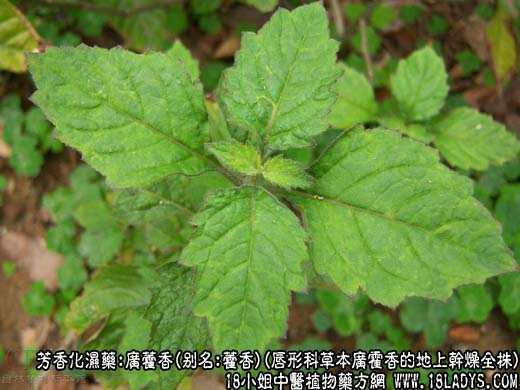
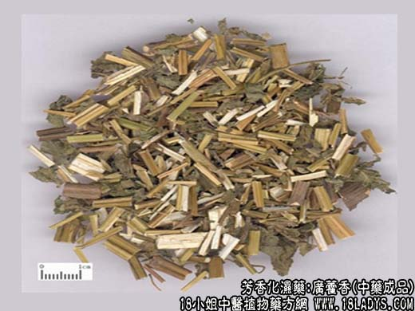
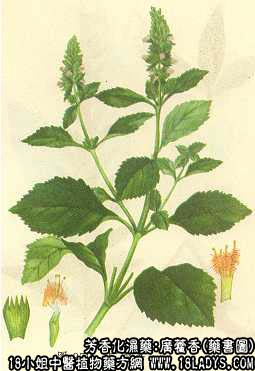

本品为常用中药。始载于《嘉佑本草》。
别名：藿香，枝香（广东）。
来源：为唇形科多年生草本植物广霍香的地上干燥全株。均为人工栽培。
产地：主产于广东省。产于广州市市郊名“石牌霍香”产于高要地区的称“高要藿香”，产于海南岛地区万宁县者，称“海藿香”，产于湛江者称“湛江藿香”。
性状鉴别：石牌藿香，全长约30～90厘米。基茎多为单枝，方圆形，直径约1～2厘米，表皮灰棕黄色，多细纵纹，并显四条略下陷的纵沟纹，基茎木质化坚硬，不易折断，断面上黄色，有白色小髓心约1毫米。在茎基5～9厘米处开始分枝，分枝处稍膨大如节断，分枝较多，对生霍互生，分枝下端亦略方圆形，亦有纵沟纹，并有叶柄脱落的残痕。质渐疏松易折断，断面灰绿色，白色髓心渐大。上端茎渐细，方形，除显纵顺沟纹外，密生灰黄色毛茸，并带有部分皱缩破碎的叶片，茎幼嫩疏松断面髓心约占直径的1/2以上。叶面灰棕色，叶背绿色，两面密生毛茸、气微异香，味微苦淡。
高要藿香：形态基本与石牌藿香相同，单枝条稍稚嫩，略轻泡，自中段起则带有较多的叶片，茎叶上披有较多毛茸、气味略同石牌藿香。
海藿香：形态略同于高要藿香，但枝条较细而分枝较多，更显幼嫩而多叶片、毛茸显著，气味不及石牌藿香浓厚。
湛江藿香：茎较幼细而短，近方形，分枝较多而弯曲，节较疏，表面灰棕色（发红）。嫩茎方形，具稀疏毛茸。断面髓较大。叶片灰绿色，毛茸较粗。气味不及以上藿香纯正。以上四种在商品上统属于广藿香类。
以上四种均以茎坚实，叶少，味香浓者为佳。
主要成分：叶和茎含挥发油，油中主成分为广藿香醇。广藿香酮。另含鞣质、苦味质。
功效与作用：止呕、止泻、健胃、解热及发散风寒。
炮制：主茎切片，分枝切咀，叶生用。
性味：辛微温。
归经：肺、脾、胃经。
功能：发表解暑，化湿开胃，理气止呕。
主治：夏伤暑湿，寒热胸闷，腹痛吐泻。胃呆不肌。
临床应用：为夏季治疗暑湿的常用药。
1、用于治疗夏季感冒而兼有胃肠症（有头痛、腹痛、呕吐、腹泻）常配半夏、苏叶等止呕、厚朴止泻，白芷解表，方如藿香正气丸。
2、用于治疗急性胃炎，适宜于因饮食生冷或不洁食物引起者，表现有上腹胀闷、发热、疲倦、呕吐、腹泻、口臭、舌苔厚腻、脉濡缓。可配陈皮、厚朴、苍术加强理气除湿作用，方如不换金正气散；也可用藿香正气丸。
3、用于治疗中暑而有发热、烦渴、恶心呕吐等症状者，用藿香（鲜藿香叶更好）配连翘、半夏以清暑散热止呕，方如藿香连翘饮。
附：1、藿香、苏叶、芦根均能止呕，但藿香偏于健胃止呕。苏叶偏于发汗解表。芦根治胃热呕吐；2、藿香叶发散离较强、藿香梗止呕力较强；3、阴虚火旺和胃热呕吐者不宜用本品。
用量：6～15g。
处方举例：1、藿香正气丸（《局方》）。成药（含藿香、苏叶、半夏、白芷、大腹皮、茯苓、白术、陈皮、厚朴、桔梗、甘草），每次1丸，每日1～2次，姜枣汤送服。
2、不换金正气散（《局方》）：藿香6g，苍术9g，厚朴6g，清半夏9g，陈皮6g，甘草3g，水煎服。
3、藿香连翘饮：藿香6g，连翘6g，制半夏6g，陈皮3g，水煎服。